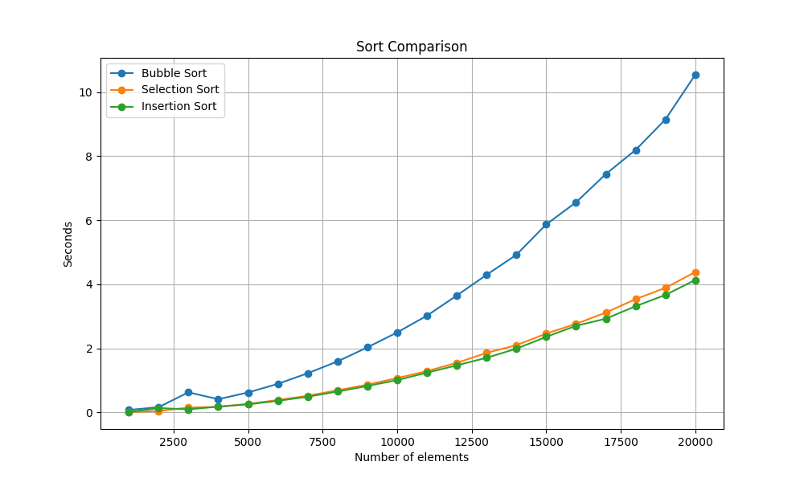

The objective of this lab is to study and compare the performance of different sorting algorithms, test and debug code, and practice good coding habits while analyzing the efficiency of bubble sort, selection sort, and insertion sort algorithms through experimentation and visualization.
Carefully read and follow the instructions.
Your code needs to follow good coding habits, including proper commenting.
At the top of your file, clearly indicate your name and student number.
In Python, when you pass a list as an argument/input to a function, you are passing a reference to the original list. What does this mean? It means that any changes made to the list within the function will affect the original list outside of the function.
def modify_list(my_list):
my_list.append(100)
my_list[0] = 42
my_list = [1, 2, 3]
modify_list(my_list)
print(my_list) # Output will be [42, 2, 3, 100]
In the example above, the modify_list function modifies the original list my_list by appending an element and changing the value of an existing element. When you print my_list after calling the function, you can see that the changes made within the function have affected the original list.
Now, let's practice. Write a Python function called add_element that takes a list and an element as arguments. The function should add the given element to the end of the list.
Your task is to implement the add_element function and call it with different lists and elements to observe how the function modifies the lists. Try calling the function with lists of different lengths and various elements.
You do not need to submit any file for this section.
Start by creating a new PyCharm project. In the new project, copy and paste the two provided files: test.py and sorting_algorithms.py. Your implementation of the sorting algorithms goes in the second file. The first file is used for testing purposes. Make sure your code is compatible with the code in the main function. I will be using the same file to test and mark your labs.
Note that you cannot use any built-in Python sorting functions, or sorting functions from external Python packages. The sorting itself should only depend on loops. You can only use the len() and range() functions when implementing the three algorithms.
In Bubble sort, we sort the list by making successive passes. We do as many passes as there are elements of the list.
In each pass, we start by comparing the first element to the second. If the first is greater than the second, we swap them; if not, we do nothing. We then compare the second and third elements. Again, if the second element is greater than the third, we swap. We continue until we have tested the second-last element against the last element, swapping at each step.
Visualizing Bubble Sort
Complete the function bubble_sort in the file sorting_algorithms.py. The function takes a given 1-dimensional list and sorts the elements of the list in ascending order. Use the bubble sort algorithm. Test your code using the test file using different lists.
Selection sort involves traversing the list to find the smallest number and then swapping it with the element in the first position. Then, we find the second smallest number starting at the second position, and we swap it with the element at the second position. We continue in this manner until the entire list is sorted.
You can view an animation of selection sort here.
In the function selection_sort, write the implementation of selection sort.
Use the file test.py to test your code as you go. You may modify test.py to test with different lists.
Imagine you have a deck of playing cards, and you want to arrange them in ascending order. Here's how insertion sort works:
You can view an animation of insertion sort here.
In the function insertion_sort, write the implementation of insertion sort.
Use the file test.py to test your code as you go. You may modify test.py to test with different lists.
Your code for this part will go inside the function sort_compare in the file sorting_algorithms.py.
The intended goal of the sort_compare function is to perform a comparison of three sorting algorithms: bubble sort, selection sort, and insertion sort. It aims to analyze and visualize the time it takes for each of these sorting algorithms to sort lists of different sizes.
randint() from the random package to generate the random list of integers of a given size.time() from the time package. Example of use:
t = time.time() # get current time
# do something, e.g. run the sort
elapsed = time.time() - t
elapsed measures the time in seconds it took for line 2 in the code fragement above to execute.
To create the line graph, import the package matplotlib.pyplot as plt and use the function plt.plot()
If you encounter an error indicating that the matplotlib package is not installed when attempting to import it, proceed to install the package (as demonstrated at the beginning of the lab).
An example using the plt.plot() is shown below. Do your own research to figure out how to further customize the graph to match the provided image (e.g. adding labels).
The function should also save the generated visualization as an image file ('sort_comparison.png').
x = [7, 14, 21, 28, 35, 42, 49]
y = [5, 12, 19, 21, 31, 27, 35]
z = [3, 5, 11, 20, 15, 29, 31]
# Plot a simple line chart
plt.plot(x, y)
# Plot another line on the same chart/graph
plt.plot(x, z)
plt.show()

In a zipped file, only include the file sorting_algorithms.py and the generated image sort_comparison.png. DO NOT rename any of the files. Submit the zipped file in Moodle by Monday October 30th at 11:59pm.